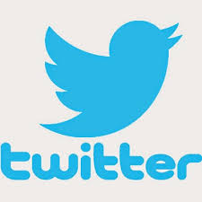

TWITTER
¿Qué es Twitter?
Twitter es un red social de microblogging, que permite enviar mensajes de 280 caracteres, que pueden ser vistos por otros usuarios y puedes seguir a otras cuentas de tu interés, además de conseguir seguidores que, a su vez, te sigan a ti.
¿Cómo nació realmente Twitter?
Si nos remontamos a los orígenes de esta plataforma digital, ésta podemos decir que fue fundada por Jack Dorsey, Evan Williams y Biz Stone en 2006.
En sus inicios, ellos tenían claro el concepto que querían crear: una plataforma que «heredara» la esencia original de los clásicos SMS móviles y que, a su vez, permitiera a los usuarios estar permanentemente conectados, así como estar al tanto de las actualizaciones de los demás usuarios.
Esta plataforma tiene carácter de autopublicación basado en la inmediatez de sus mensajes.
Es una red perfectamente estructurada para compartir experiencias y vivencias en el momento en que suceden.
El tipo de contenido que se publica en Twitter es de diversa naturaleza: podemos encontrarnos mensajes personales,
fotografías, infografías, información corporativa, noticias, eventos, descuentos, publicidad, etc.
Pero, una vez vistos a grandes
rasgos qué es Twitter y cómo funciona, veamos cuál es la terminología de esta red social, para comprender mejor cómo se usa.
para entender qué es Twitter

Lista:
Es un listado que puedes configurar con tus cuentas favoritas. Puedes crear la cantidad de listas que quieras y otorgarles un nombre.
Por ejemplo, podemos tener una lista relacionada con hosting WordPress, otra con hosting PrestaShop, otra con consejos de Email Marketing, etc.
IM (Instant Message):
Es un mensaje directo y privado que enviamos a un usuario de Twitter.
Me gusta:
Está representado por un icono de corazón. Lo clicamos si nos ha gustado un tweet.
Hashtag:
El rey de Twitter. Se representa con un icono de almohadilla (#) y permite añadir tras él los términos que queramos. Se utiliza para facilitar búsquedas.
Por ejemplo, usando #WordPress en el buscador, encontraremos un listado de los usuarios que han utilizado ese término en sus tweets.
Trending Topic:
Son los temas más comentados del momento, es decir, las palabras con más menciones de la red social en un determinado periodo de tiempo.